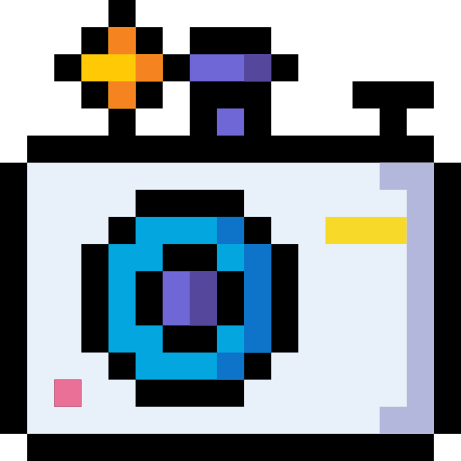
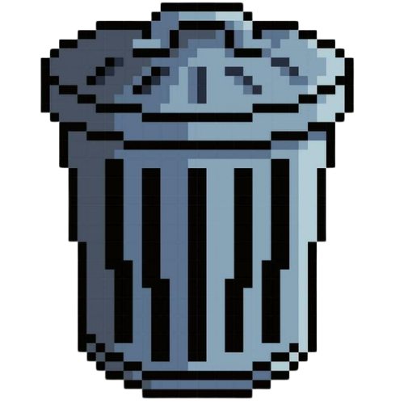

|
 |
|
 |
Hi, I'm Ceej!
I'm a 2nd year student studying Computer Science at the UP Open University. I'm the youngest of two and a Capricorn born on Rizal day. I guess you can say I'm a fighter.
What I Love Doing
-
Gaming
I'm a sucker for multiplayer games and puzzle games. My favorite video games are Life is Strange, Undertale, and Balatro. I also enjoy a good Sudoko as well as the NY Times puzzles.
-
Reading
I love essays on politics and society, as well as short stories. My last book is 'A tale for the Time Being' by Ruth Ozeki.
-
Music
I play guitar and keyboard. I mostly listen to metal, screamo, indie pop, and (lately) OPM. I also collect cassettes and CDs. I've been learning about Strudel, a coding-based music composition tool.
-
Arts
I enjoy illustrating. I've been exploring digital art tools and experimenting with acrylics and watercolors. I also love streeet photography.
-
Sports
I love to run! My longest has been 10km. I also love Chess, though I suck at it.